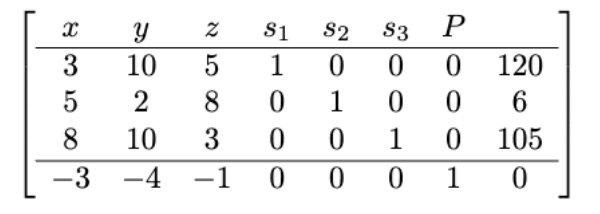
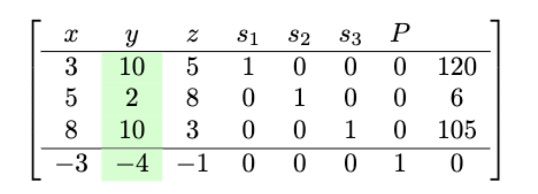
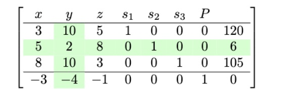
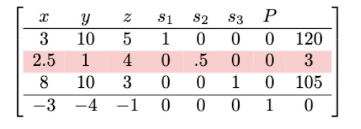
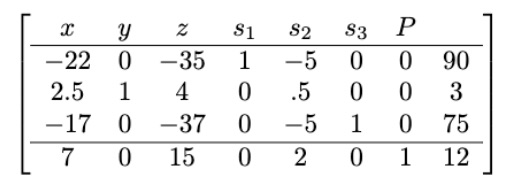

6 The Simplex Method
6.1 Introduction to Simplex Method
As stated earlier, Linear Programming is one of the most commonly used methods for solving practical problems in business and even in government. However, the problems we have considered so far had a maximum of two products and relatively small feasible regions and few corner points. Many real life problems often involve much more products and result in very big feasible regions with hundreds or even thousands of corner points.
As an example, consider the following LP problem:
Example 1
A factory manufactures chairs, tables and bookcases each requiring the use of three operations: Cutting, Assembly, and Finishing. The first operation can be used at most 600 hours; the second at most 500 hours; and the third at most 300 hours. A chair requires 1 hour of cutting, 1 hour of assembly, and 1 hour of finishing; a table needs 1 hour of cutting, 2 hours of assembly, and 1 hour of finishing; and a bookcase requires 3 hours of cutting, 1 hour of assembly, and 1 hour of finishing. If the profit is $20 per unit for a chair, $30 for a table, and $25 for a bookcase, how many units of each should be manufactured to maximize profit?
Let us start by creating a mixture chart for the problem:
| Products | Resource: Cutting(600hrs) |
Resource: Assembly(500hrs) |
Resource: Finishing(300hrs) |
Profit ($) |
|---|---|---|---|---|
| Chairs | 1 | 1 | 1 | 20 |
| Tables | 1 | 2 | 1 | 30 |
| Bookcases | 3 | 1 | 1 | 25 |
Next, we make the constraint inequalities assuming that the company makes \(x\) chairs, \(y\) tables, and \(z\) bookcases. Note that using \(x,y\), and \(z\) is not advisable when you have more than 3 variables. It is recommended you use \(x_1, x_2, x_3,...\)
Minimum constraints:
Chairs: \(x\ge 0\)
Tables: \(y\ge 0\)
Bookcases: \(z\ge 0\).
Resource constraints:
For cutting: \(x+y+3z\le600\)
For assembly: \(x+2y+z\le500\)
For finishing: \(x+y+z\le300\)
Things to Note
- Unlike the problems encountered in the previous chapter, this problem includes 3 variables \((x,y, z).\) This means that, we would have to create a three dimensional graph to visualize the feasible region- a task that is impossible for humans to execute by hand.
- Most application problems include way more than 3 variables, which means we would need a multidimensional graph to visualize the feasible region.
- The simplex method provides an algorithmic method that solves this type of problems without needing to create a visual feasible region. The method can also be used to solve problems in the previous chapter.
- The technical details of the simplex method are beyond the scope of the course but the algorithm itself is relatively easy to execute once you learn it.
We will return to this problem later.
6.2 Step-by-Step Simplex Method
We want to walk through the simplex method step-by-step until we find an optimal production policy and the maximum profit.
Consider the example below:
Example 2
Maximize the function \(P=3x+4y+z\) subject to the conditions
\[3x+10y+5z \le 120 \] \[5x+2y+8z \le 6\] \[8x+10y+3z \le 105\]
Problem Posing: Note that this problem does not have a real world context, before you proceed, please write a real life LP problem that might suit the given profit function and constraints.
Step 1:
Convert the inequalities to equations by adding slack variables and rewrite the profit function so that the constant value is on the right hand side of the equation: \[3x+10y+5z+s_1 = 120 \] \[5x+2y+8z +s_2= 6\] \[8x+10y+3z +s_3= 105\] \[-3x-4y-z+P\] Slacks allow us to convert inequalities to equations by filling up the amount by which a quantity falls short of another. For example, \(s_1\) is the amount by which the quantity \(3x+10y+5z\) falls short of 120. So, by adding \(s_1\) to \(3x+10y+5z\) we achieve the equality. sh
Step 2:
Create the initial simplex tableau. In the tableu, each equation appears in its own row with the profit function appearing as the last row. See table below:
Step 3:
Choose the pivot column. The most negative entry in the last row is -4 which is in column 2. So, column 2 is our pivot column. See below:

Why do we choose the most negative element in the last row?
The most negative entry in the bottom row represents the largest coefficient in the objective function - the coefficient whose entry will increase the value of the objective function the quickest. Remember this is a maximization problem.
Step 4:
Find the pivot row. To find the pivot row, divide the values on the far right by values of the pivot column. The row with the smallest quotient will be your pivot row. In this case, \[120/10=12\] \[6/2=3\] \[105/110=10.5\] The smallest quotient here is 3, which means the pivot row is row 2. The matrix below highlight the picot row:

Why does the smallest quotient identify a row?
Using the quotients to identify the pivot element guarantees that we do not violate the constraints as we proceed with the algorithm.
Step 5:
The 2 at the intersection of row 2 and column 2 is called a pivot element. We want to perform row operations to make it a 1. To do this, we simply divide the whole of row 2 by 2. This can be represented as \(\frac{1}{2}R_2 \mapsto R_2\). This means that the new row 2 will be half of the previous row 2.
\(\frac{1}{2}\times(5,2,8,0,1,0,0,6)=(2.5,1,4,0,.5,0,0,3)\)
The new tableau becomes,

Step 6:
We perform row operations to convert every entry above and below the new pivot element (1) into a 0. The following operations will achieve this:
- The new row 1 will be the difference between row and and 10 times row 2 i.e., \(R_1 - 10R_2\mapsto R_1\).
- The new row 3 will be the difference between the current row 3 and 10 times row 2.e., \(R_3 - 10R_2\mapsto R_3\).
- The new row 4 will be the current row 4 plus 4 times row 2 i.e., \(R_4 + 4R_2\mapsto R_4\).
We perform the actual computations below:
\(R_1 - 10R_2\mapsto R_1\):
\((3,10,5,1,0,0,0,120) - 10(2.5,1,4,0,0.5,0,0,3)=(-22,0,-35,1,-5,0,0,90)\).
\(R_3 - 10R_2\mapsto R_3\):
\((8,10,3,0,0,1,0,105) - 10(2.5,1,4,0,0.5,0,0,3)=(17,0,-37,0,-5,1,0,75)\).
\(R_4 + 4R_2\mapsto R_4\):
\((-3,-4,-1,0,0,0,1,0) + 4(2.5,1,4,0,0.5,0,0,3)=(7,0,15,0,2,0,1,12)\).
Now we put these new rows into our tableau. See below:

Notice that the last row has no negative numbers. This means we are done and we can directly read our solution. If there were any negative numbers left on the last row, you would have to do the process one more time (i.e., find new pivot column and row then perform subsequent row operations). This process continues until there are no negative numbers on the last row.
Step 7:
Read the solution from the final tableau. Every column with a “1’s” and “0’s” would give us a value for a variable. In our case above,
\(y=3, s_1=90, s_3=75, P=12\)
Al the others (i.e., \((x,z,s_2)\)) will be zero.
This solution basically means, make 3 units of product \(y\), and zero product \(x\) and \(z\).